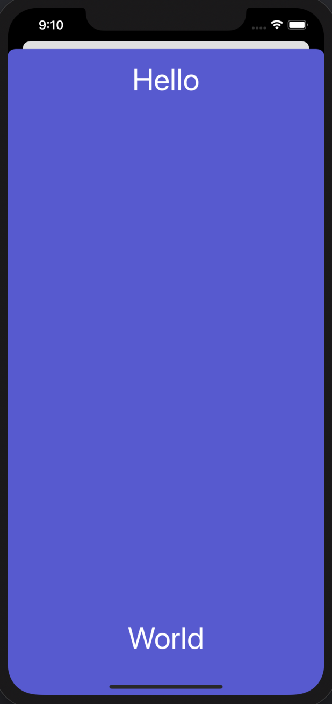
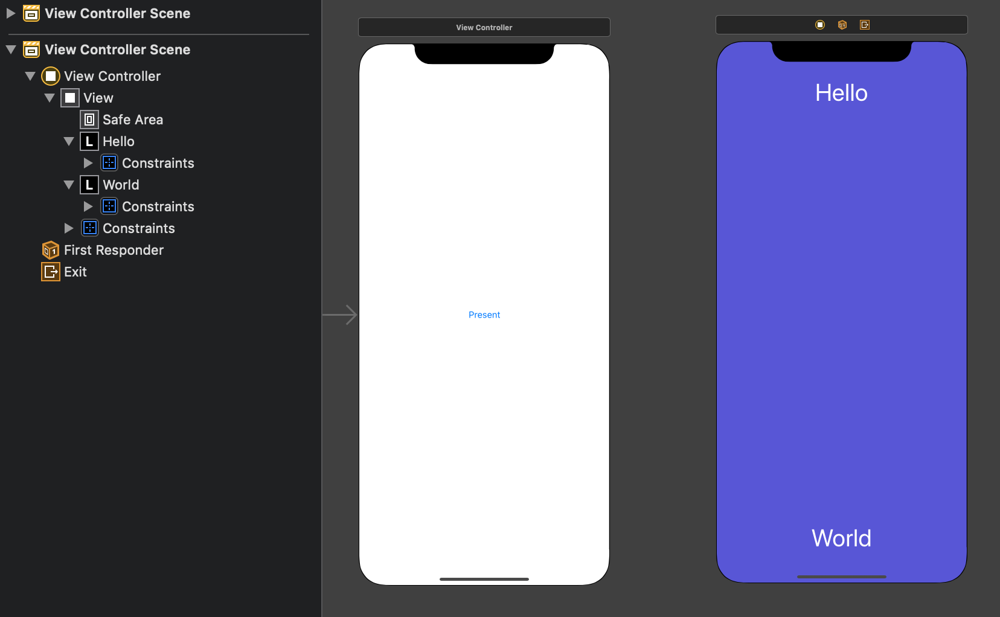
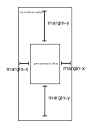
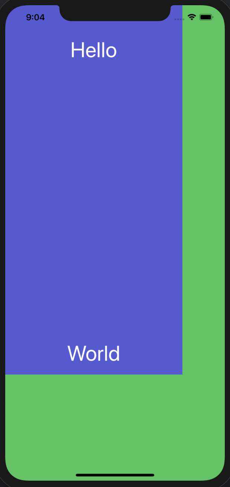

UIPresentationControllerを利用すると、モーダル表示の方法をカスタマイズできる。これについて備忘録を残す。
そもそもモーダル表示とは
そもそもモーダル表示って何？と思ったので調べる。モーダルと検索すると「モーダルウインドウ」の話がよく出てくる。これは「ある操作を終えるまで親ウインドウの操作ができない子ウインドウ」という意味で使われているようだ。これはモーダル表示と似たような意味なのだろうか。判然としないので一次資料を漁る。
AppleのHuman Interface GuidelineにModalityの意味が書いてあって、これを引用すると、
Modality is a design technique that presents content in a temporary mode that’s separate from the user's previous current context and requires an explicit action to exit.
[意訳] Modalityとは、ユーザの以前の文脈から離れた一時的なモードでコンテンツを表示するデザインの手法。そのモードを終了するためには何か明示的なアクションを必要とする。
ほとんど同じ意味っぽい。
例えば次のようなモーダル表示(Page Sheet)の場合，呼び出し元が下にあってその上に青いビューが載っている。ここでは、「上から下に引っ張る」というアクションを起こすことで、このビューを閉じることができる。

用意するもの
- 表示元のViewController
- 表示先のViewController
- UIPresentationControllerのサブクラス - これが表示先のViewControllerの表示方法を規定する。
ここでは、表示先のViewControllerのStoryboard IDをdestとする．
準備
まずはボタンをクリックすると表示されるものだけ作る。
Main.storyboard
表示元にはボタンを配置する。表示先はラベルを配置し、適切なConstraintを設定しておく。

ViewController.swift
ボタンのAction接続を作る。ボタンがタップされたら遷移するようにする。
class ViewController: UIViewController {
override func viewDidLoad() {
super.viewDidLoad()
// Do any additional setup after loading the view.
}
@IBAction func buttonTapped(_ sender: Any) {
let vc = (storyboard?.instantiateViewController(identifier: "dest"))!
present(vc, animated: true, completion: nil)
}
}
遷移前の設定
buttonTappedに追記して次のようにする。
@IBAction func buttonTapped(_ sender: Any) {
let vc = (storyboard?.instantiateViewController(identifier: "dest"))!
vc.modalPresentationStyle = .custom
vc.transitioningDelegate = self
present(vc, animated: true, completion: nil)
}
さらに次のextensionを追加する。
extension ViewController: UIViewControllerTransitioningDelegate {
func presentationController(forPresented presented: UIViewController, presenting: UIViewController?, source: UIViewController) -> UIPresentationController? {
return CustomPresentationController(presentedViewController: presented, presenting: presenting)
}
}
modalPresentationStyle
モーダル表示のスタイルを設定する。.customを設定すると、そのスタイルはUIPresentationControllerによって設定されるようになる(ソース)。UIPresentationControllerはUIViewControllerTransitioningDelegateのプロトコルで定義されたメソッドpresentationControllerで設定する。
今回はViewControllerにこのDelegateを設定するが、例えば表示先のViewControllerのswiftファイルにDelegateを設定する、という書き方もあり。
UIViewControllerTransitioningDelegate
このプロトコルには、ViewController間の遷移に関する設定をするメソッドが定義されている。ここではメソッドpresentationControllerのみ定義する。これはUIPresentationControllerクラスのサブクラスを返す。ここではCustomPresentationControllerとする。このクラスは次項で実装する。
CustomPresentationController
遷移時の表示アニメーションとか、遷移後の表示方法を制御するController。overrideできるメソッドはドキュメントに全て書かれているので、必要なものを実装する。
次のような内容を持つCustomPresentationController.swiftを作成する。
class CustomPresentationController: UIPresentationController {
// いろいろ書く
}
主要そうなプロパティ
presentingViewController: 表示元のViewControllerpresentedViewController: これから表示するViewControllerpresentedView: これから表示するView。挙動を検証してみた限りだと、presentedViewController.viewと同義っぽい？containerView: presentedViewを包むView？ドキュメントだとThe view in which the presentation occurs.
とあるので、この中で実際のビューの表示が起こるみたい。frameOfPresentedViewInContainerView: 表示するビューの位置・サイズを決める。
主要そうなメソッド
- 遷移の開始、終了時の処理は
presentationTransitionWillBegin/DidEndおよびdismissalTransitionWillBegin/DidEndで設定できる。前者はビューが表示される時、後者はビューが表示されなくなるときに呼ばれる。ここに表示や非表示時のアニメーションを記述する。
containerViewに実際に要素が置かれるときの処理はcontainerViewWillLayoutSubviews/DidLayoutSubviewsで設定できる。ここにはビューの位置やサイズを記述する。- 表示ビューのサイズを変更するためには
sizeメソッドをオーバーライドする。この関数はUIContentContainerプロトコルで定義されている関数。
ビューのサイズと位置の変更
以下のような配置のウインドウを作ることを考える。

設定方法はこちらを参考にした。変数名のいくつかはここと同じになっている。
サイズを変更する
CustomPresentationControllerに以下の定義を追加する。
単にsizeメソッド内でmargin込みのViewサイズを設定し、それを利用してframeOfPresentedViewInContainerViewを設定している。コンテナの存在を確認するため、containerViewの背景色を分かりやすくする。
override func presentationTransitionWillBegin() {
containerView?.backgroundColor = .systemGreen
}
let margin = (x: CGFloat(40), y: CGFloat(100))
override func size(forChildContentContainer container: UIContentContainer, withParentContainerSize parentSize: CGSize) -> CGSize {
return CGSize(width: parentSize.width - 2*margin.x, height: parentSize.height - 2*margin.y)
}
override var frameOfPresentedViewInContainerView: CGRect {
var presentedViewFrame = CGRect()
let containerBounds = containerView!.bounds
let childContentSize = size(forChildContentContainer: presentedViewController, withParentContainerSize: containerBounds.size)
presentedViewFrame.size = childContentSize
return presentedViewFrame
}
presentedViewにこの情報を教えておく必要があるので、containerViewWillLayoutSubviewsにそれを書く。
override func containerViewWillLayoutSubviews() {
presentedView?.frame = frameOfPresentedViewInContainerView
}
ラベルが青Viewの中央に並んでいる。このことから、sizeやframeOfPresentedViewInContainerViewで定義されたサイズは、単にトリミングしているわけでなく、Constraintを保ったままViewそのものを縮小したサイズだと分かる。

捕捉
実は、上のcontainerViewWillLayoutSubviews内のコードを書かなくても一見正常に動作しているように見える。しかし試しに次のようにprintデバッグしてみる。
override var frameOfPresentedViewInContainerView: CGRect {
...
print("presentedViewInContainerView:\(presentedViewFrame)")
print("presentedView?.frame:\(presentedView?.frame)")
...
}
すると、画面遷移のときに次のログが出力される。
presentedViewInContainerView:(0.0, 0.0, 334.0, 696.0)
presentedView?.frame:Optional((0.0, 0.0, 414.0, 896.0))
このログだけでは画面遷移開始前なのか後なのかはわからないが、少なくともpresentedViewの位置、サイズがframeOfPresentedViewInContainerViewと異なる瞬間がある。具体例は思いつかないが、何か表示に関するバグを生みそう。なのでcontainerViewWillLayoutSubviewsに書いたコードは必要。
位置を変更
presentedViewFrameの原点位置を変更すれば良い。
override var frameOfPresentedViewInContainerView: CGRect {
...
presentedViewFrame.origin.x += margin.x
presentedViewFrame.origin.y += margin.y
return presentedViewFrame
}
背景を暗くするアニメーション
一応こうすることで背景色を半透明の黒にできる。遷移に関するアニメーションはtransitionCoordinator?.animateを利用する。
override func presentationTransitionWillBegin() {
containerView!.backgroundColor = UIColor(white: 0.0, alpha: 0.0)
presentedViewController.transitionCoordinator?.animate(alongsideTransition: { [unowned self] _ in
self.containerView?.backgroundColor = UIColor(white: 0.0, alpha: 0.5)
})
}
これでうまくいくのだが、いろいろ調べてみると、containerViewの背景色を直接いじっている例が見当たらない。もしかしたらcontainerViewはあくまでコンテナなので、レイアウトのためにこれをいじるのはあまり良くない？
次のようにoverlayという名のViewを作って、これを半透明の黒にする例しかなかった。この場合は色を変更するのではなく、Viewそのものの透明度をアニメーションさせる。こっちのほうが良いのかな？
overlayのframeはcontainerViewWillLayoutSubviewsに記述しておく。
let overlay = UIView()
override func presentationTransitionWillBegin() {
overlay.backgroundColor = .black
overlay.alpha = 0.0
containerView?.addSubview(overlay)
presentedViewController.transitionCoordinator?.animate(alongsideTransition: { [unowned self] _ in
self.overlay.alpha = 0.5
})
}
override func containerViewWillLayoutSubviews() {
...
overlay.frame = containerView!.bounds
}
タップされたら画面を閉じる
次のように、overlayにUITapGestureRecognizerを設定しておく。これはpresentationTransitionWillBeginの中に定義する。
let recognizer = UITapGestureRecognizer(target: self, action: #selector(overlayTapped(_:)))
overlay.addGestureRecognizer(recognizer)
selectorにoverlayTapped関数を指定したから、これを定義する。
@objc func overlayTapped(_ sender: UITapGestureRecognizer) {
presentedViewController.dismiss(animated: true, completion: nil)
}
画面の破棄が終了するとdismissalTransitionDidEndが呼ばれるので、その処理を書く。
override func dismissalTransitionDidEnd(_ completed: Bool) {
if completed {
overlay.removeFromSuperview()
}
}
捕捉
dismissalTransitionDidEndに処理を書かなくても一見動作は同じである。これを書かなかったからと言ってoverlayが破棄されないわけでもないようだ(これはoverlayをカスタムビューにして、deinit内でprintを書いてみると分かる)。しかし、少なくとも僕が調べたサイトでは、すべてoverlay.removeFromSuperview()を呼び出している。
現時点で考えられる理由は次の2点である。
- ドキュメントに、「このメソッドはpresentation controller内で追加されたViewを削除するために使う」と書かれているから、削除しておいた方が行儀が良い。
- もう少し凝ったコードを書くとき、何らかの理由でメモリリークが起こるのを防ぐため。
overlayのアニメーション
overlayがゆっくりと透明になるようにする。presentedViewが閉じられるときに行いたいので、dismissalTransitionBeginに記述する。
override func dismissalTransitionWillBegin() {
presentedViewController.transitionCoordinator?.animate(alongsideTransition: { [unowned self] _ in
self.overlay.alpha = 0.0
})
}
捕捉: 遷移のアニメーションの向きを制御したいとき
例えば、「Viewを横からスライドして出現させたい」などの要求があるかもしれない。
まずは、次の2つのメソッドをViewController.swiftのextension部分に書く。CustomAnimationControllerはアニメーションを制御するためのオブジェクトで、後で定義する。
func animationController(forDismissed dismissed: UIViewController) -> UIViewControllerAnimatedTransitioning? {
return CustomAnimationController(isPresentation: true)
}
func animationController(forPresented presented: UIViewController) -> UIViewControllerAnimatedTransitioning? {
return CustomAnimationController(isPresentation: false)
}
UIViewControllerAnimatedTransitioningプロトコルに準拠したNSObjectを作っておく。こちらでは、次のように、isPresentedで表示時と削除時でアニメーションを分けていた。
class CustomAnimationController: NSObject, UIViewControllerAnimatedTransitioning {
let isPresented: Bool
init(isPresented: Bool) {
self.isPresented = isPresented
}
func transitionDuration(using transitionContext: UIViewControllerContextTransitioning?) -> TimeInterval {
return 0.2
}
func animateTransition(using transitionContext: UIViewControllerContextTransitioning) {
if isPresented {
animatePresentation(using: transitionContext)
} else {
animateDismissal(using: transitionContext)
}
}
func animatePresentation(using transitionContext: UIViewControllerContextTransitioning) {
// 表示時のアニメーションを書く
}
func animateDismissal(using transitionContext: UIViewControllerContextTransitioning) {
// 削除時のアニメーションを書く
}
}
これについては興味があればまた勉強する。
その他の知見
Computed Property
変数xは例えばこんな感じで初期化できる。つまり初期化時に何かしらの処理を行いたい時にそれを{}でまとめて書ける。これはframeOfPresentedViewInContainerViewのoverride時に使った。
let y = 10
var x: Int {
var t = 0
for i in 1...y {
t += i
}
return t
}
xにアクセスするたびに毎回計算が行われることに注意(中にprintを入れてみると分かる)。一回のみで良い場合は次のように、Computed Propertyではなくクロージャを使う。
let y = 10
var x: Int = {
var t = 0
for i in 1...y {
t += i
}
return t
}()
参考